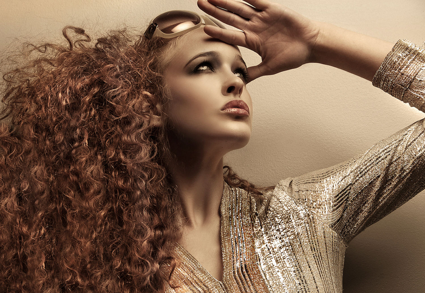
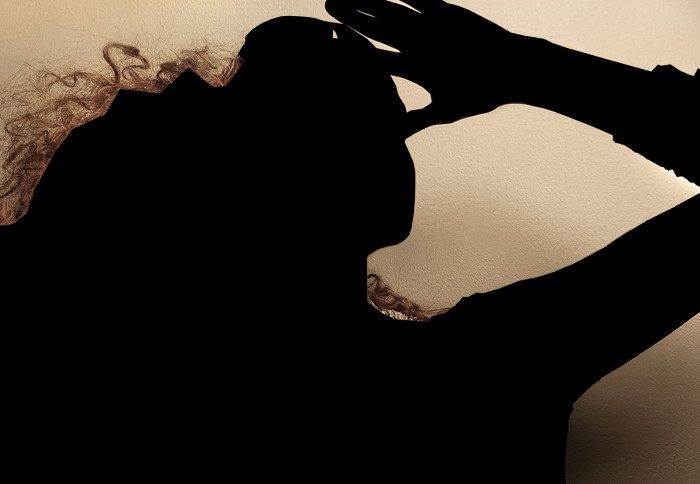
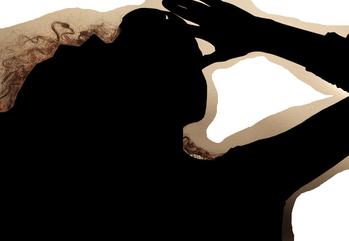
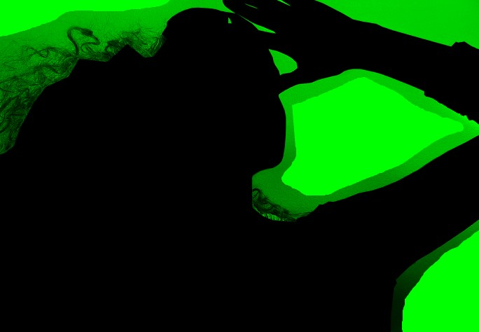
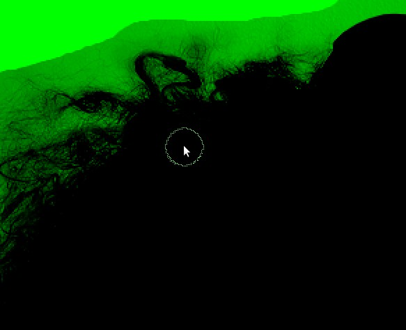
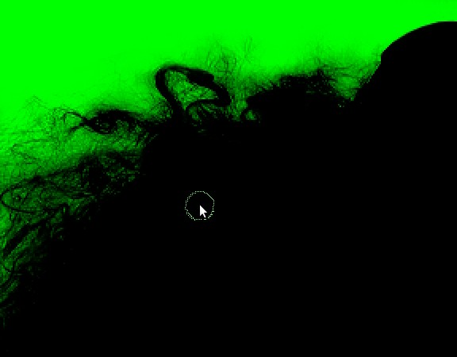
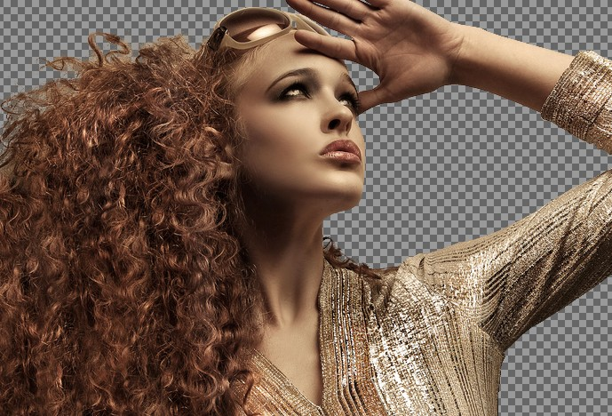
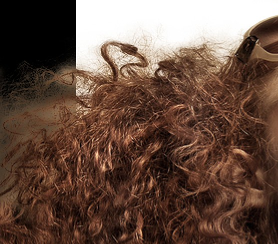
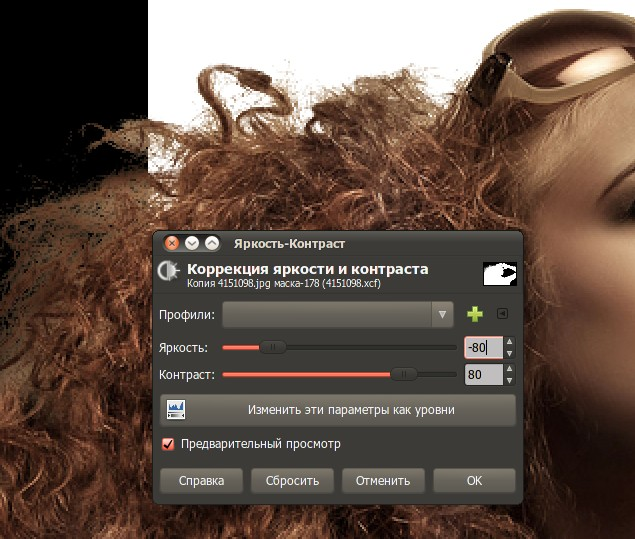

Это не простой, но качественный метод. Результат выделения получается немного лучше чем у других методов.
Сразу хочу сказать, что урок достаточно сложный и вопросы типа «как закрасить картинку черным цветом» тут описаны не будут. Кроме того, использоваться в уроке будет достаточно сложная фотография для обтравки, поэтому результат обтравки будет достаточно тяжело перенести на тёмный фон.
Открываем это фото:

И сразу делаем дубликат слоя. Скрываем его и переходим на основную картинку. В последствии она станет маской для дубликата.
Аккуратно закрашиваем девушку черным цветом. Волосы, которые плавно переходят в фон оставляем нетронутыми.

Дальше нужно сделать небольшие белые пятна, чтобы потом можно было по ним ориентироваться:

Теперь переходим на панель «Каналы» снимаем возможность редактирования со всех каналов (нужно кликнуть по полоске канала) и убираем видимость с цветных каналов (глазик как в слоях), а потом по очереди включаем их смотрим на каком канале цвет волос и фона более контрастный.
На этой фотографии — зеленый канал (на других может быть иначе).

Включаем для редактирования зеленый канал, приближаем изображение и берем инструмент «Осветление/Затемнение».
В настройках этого инструмента есть параметр «Диапазон». Если выбрать диапазон «Светлые части», то затемняться или осветляться будут только они.
С помощью инструмента для начала затемните темные части волос резкими и короткими мазками (настраивайте непрозрачность и экспозицию под свои нужды).

Перенастройте инструмент и осветлите светлые части вокруг волос, но не стремитесь полностью отделить волосы от белых участков. Должны остаться и средние тона.

Перейдите на панель «Каналы» и сделайте копию зеленого канала. Включите видимость и возможность редактировать другие каналы.
Перейдите на панель «Слои» отключите видимость слоя, над которым работали, видимость дубликата слоя включите. Добавьте ему инвертированную маску слоя, основанную на зеленом канале.

На этом этапе лучше определиться на какой фон вы будете перемещать модель и подставить именно его. Я покажу на черном и белом цвете что получилось у меня:

На обоих цветах кроме волос видны остатки фона. На тёмном — гораздо заметней. Чтобы это исправить сделайте активной маску слоя (когда она активна — вокруг нее белая рамка).
Зайдите в меню «Цвет — Яркость/Контраст» и покрутите ползунки, чтобы добиться лучшего результата именно для своего цвета фона (обратите внимание, что значения «Яркость» и «Контраст» лучше ставить равными, но диаметрально противоположными):
